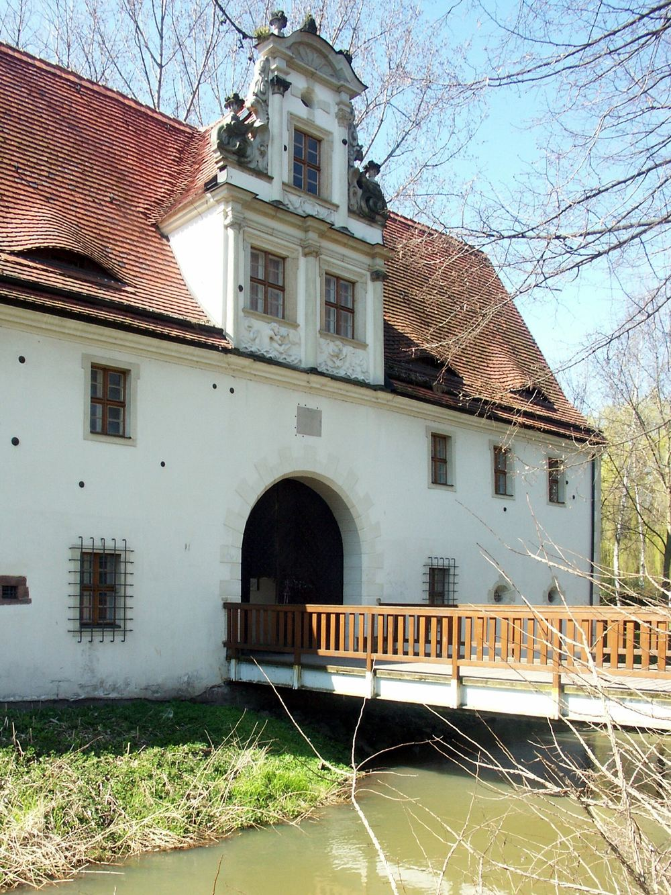

Geschichte
Vom Rittergut zum Museum.
Dölitz ist älter als die Stadt, zu der es gehört. Eine Zeitleiste — von den Altsorben bis heute.
Zeitleiste
Was auf diesem Grundstück geschah.
-
seit dem 7. Jahrhundert
Altsorben besiedeln das Leipziger Land und gründen unter anderem den Ort Dölitz. Der Name geht auf das altsorbische dolec zurück und bedeutet so viel wie „Ort im Tal“.
-
ab 1125
Deutsche Bauern, vor allem Flamen, erschließen das Gebiet weiter. Im westlichen und nördlichen Teil der heutigen Helenenstraße entsteht ein Gassendorf.
-
1262
Ein Johannes von Doluz wird erwähnt — ein Hinweis darauf, dass bereits im 13. Jahrhundert ein deutscher Herrensitz in Dölitz bestand.
-
1348/49
Dölitz wird im Lehnsbuch des Markgrafen Friedrich des Strengen erstmals urkundlich erwähnt.
-
1636
Christoph von Crostewitz verkauft Schloss und Rittergut an den Leipziger Kaufmann Georg Winckler, der das Renaissanceschloss bis 1640 umbauen lässt.
-
1670
Andreas von Winckler lässt das Torhaus des Schlosses im Stil des holländischen Barock errichten. Es ist heute das älteste Bauwerk in Dölitz.
-
1760–71
Rosine Elisabeth Oeser lässt in Dölitz das Oeser-Haus errichten. Ihr Mann, Adam Oeser, Direktor der Leipziger Malakademie, gibt hier zwischen 1766 und 1768 dem Studenten Johann Wolfgang Goethe Zeichenunterricht.
-
1813
Der ehemalige Herrensitz Dölitz ist am 16. Oktober eines der Zentren der Völkerschlacht. Hier gerät der österreichische General von Merveldt in Gefangenschaft; Napoleon schickt ihn mit einem Angebot zur Waffenruhe zu den Verbündeten zurück. Neben der Mühle werden 26 Gebäude im Ort zerstört.
-
1839
Dölitz wird eine selbstständige Gemeinde und damit formal unabhängig vom Rittergutsbesitzer.
-
1894/95
Nach Probebohrungen beginnt man, auf der Dölitzer Flur einen Braunkohleschacht anzulegen.
-
um 1900
In Dölitz gibt es acht Gasthäuser. Einige, wie der alte Dorfkretscham „Zum Reiter“ und der „Park Dölitz“, sind stadtbekannte Ausflugslokale der Leipziger.
-
1910
Dölitz wird nach Leipzig eingemeindet. Mehrere Straßen werden umbenannt — aus der Wassergasse wird die Helenenstraße.
-
1927
Die Erben der Familie Winckler verkaufen Schloss und Rittergut an die Stadt Leipzig.
-
1944–45
Dölitz bleibt von großflächiger Zerstörung verschont, verliert aber Gebäude durch Brandbomben und Luftminen. Das Oeser-Haus wird zerstört, das Schloss schwer beschädigt.
-
1947
Die Reste des Schlossgebäudes werden gesprengt. Das Torhaus bleibt stehen.
-
1960
Im Torhaus des Dölitzer Schlosses wird eine ständige Zinnfigurenausstellung eröffnet — der Beginn des Museums.
-
1989
Die letzte Landwirtschaftsausstellung der DDR findet auf dem heutigen agra-Gelände statt.
-
2014
Seit Juli betreibt der Verband Jahrfeier Völkerschlacht b. Leipzig 1813 e. V. das Torhaus — gemeinsam mit den Zinnfigurenfreunden Leipzig e. V.
-
heute
Dölitz bildet gemeinsam mit Dösen einen Leipziger Ortsteil im Stadtbezirk Süd.
Mehr zur Geschichte von Ort und Gut Dölitz erfahren Sie in der Dauerausstellung.
Im Torbogen
Zwei Tafeln, zwei Erinnerungen.
Wer durch das Tor geht, kommt an ihnen vorbei. Die eine erinnert an die Erstürmung und Verteidigung des Herrensitzes am 16. Oktober 1813 und an Oberst Samuel von Reissenfels, der hier fiel. Die andere, in Deutsch und Polnisch, an Fürst Poniatowski und die 8000 polnischen Soldaten des VIII. Korps.


Ringsum
Der Stadtteil gehört dazu.
Das Torhaus ist ein Eingang in den über 50 Hektar großen agra-Park, der den historischen Herfurthschen Landschaftspark, das Dölitzer Holz und den ehemaligen Schlossgarten umfasst. Seine Geschichte beginnt um 1890.
Eines der bedeutendsten historischen Gebäude von Dölitz ist die Wassermühle — die letzte erhaltene Wassermühle Leipzigs. In den Kämpfen der Völkerschlacht 1813 abgebrannt, wurde sie schon 1814 wieder aufgebaut.
2023 wurde am Ufer der Mühlpleiße der Verweilort „Mühlenblick“ eingeweiht; entlang des Ufers verläuft ein 1986 angelegter und 2022 erneuerter Vogellehrpfad mit rund 100 Nistkästen, die Kinder beim Torhausfest gebaut haben.